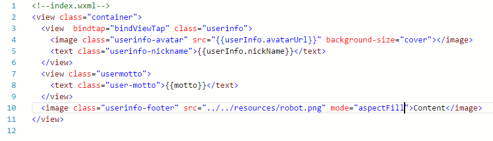

如何写一个微信小程序？
假设我们已经注册了应用号，并完成了关联开发者帐号等等的前期准备工作。
下载安装开发工具
主界面
代码界面
调试界面
设置界面
一个完整的微信小程序项目结构
- app.json 主配置
- app.js 主逻辑
- app.wxss 全局样式表
必需文件：
app.json 主配置文件
app.js 主逻辑文件
- 监听全局事件
- 提供全局函数
- 寄存全局变量
主要作用：
app.wxss 全局样式表
一个完整的页面结构
页面是一个相对独立的逻辑单元，类似网站中的单个网页。一个页面Page对应四个文件分别为：
Page.js Page.wxml Page.wxss Page.json
Page.js Page.wxml Page.wxss Page.json
- Page.js 页面逻辑
- Page.wxml 页面视图
- Page.wxss 页面样式表
- Page.json 页面窗口配置
必须文件：
非必须文件：
页面视图层

WXML文件定义页面结构，WXSS文件则定义页面表现，类似HTML与CSS。相比HTML，WXML更加强大，能够绑定数据与事件。
页面逻辑层
- 处理页面事件
- 存储页面数据
- 向视图层传递数据
主要功能：
- 数据绑定
- 事件绑定
- 生命周期
- 页面栈
- JS作用域
- JS模块化
- 页面组件
- Canvas画布
- WXAPI
小程序的开发有以下技术要点可供参考：
数据绑定
在逻辑层注册页面实例时，可以通过data字段赋予页面实例初始数据，视图层可以使用“{{...}}”操作符来渲染相应的数据。而后逻辑层可通过setData方法修改这些数据，这种修改将实时反映在视图层上。
事件绑定

视图层可以通过以上这种方法来绑定某一个事件到逻辑层的某一个方法，当事件发生时将调用逻辑层的相关方法。目前可以绑定的事件有：touchstart, touchend, touchmove, touchcancel, tap, longtap
页面生命周期

右图是页面实例的生命周期示意图，其形象说明了一个页面生命周期中的各个阶段，其所能发生的各种事件，以及它们的顺序。
页面栈
小程序框架将维护一个页面栈，当调用navigateTo方法跳转页面时，将生成一个新的页面实例压栈。点击左上角返回则释放当前页面实例并出栈。栈顶是当前显示的页面，而栈底则是程序首页。如果使用redirectTo方法跳转页面，则会释放栈顶页面而不会改变栈的深度。
JS作用域

在 JavaScript 文件中声明的变量和函数只在该文件中有效；不同的文件中可以声明相同名字的变量和函数，不会互相影响。
可以使用getApp()方法来取得APP实例，此实例全局唯一，可以借此定义并访问全局变量或方法。
JS模块化
我们可以将一些公共的代码抽离成为一个单独的 js 文件，作为一个模块。这里的模块将采用nodejs提供的方法来管理。js文件可以通过module.exports来向外暴露接口。其他js文件可以通过require方法取得js模块提供的方法。
页面组件
Canvas绘图
canvas提供像素级别的绘图接口，利用它我们可以实现诸如动画、游戏等强交互体验。
小程序框架对canvas的包装与html5的canvas原生接口很接近，这使得移植与学习都更加方便。
WXAPI
前后台交互
用户登录
单纯前端登录为弱登录，可以取得用户名称、头像等基本信息，但无法取得可用于区分用户的openid信息，也无法调用微信开放平台的其他功能。可以借助后台协助完成强登录从而取得这些信息。
微信支付
谢谢关注